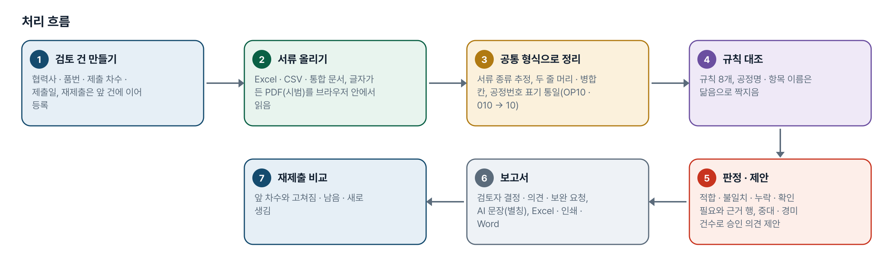
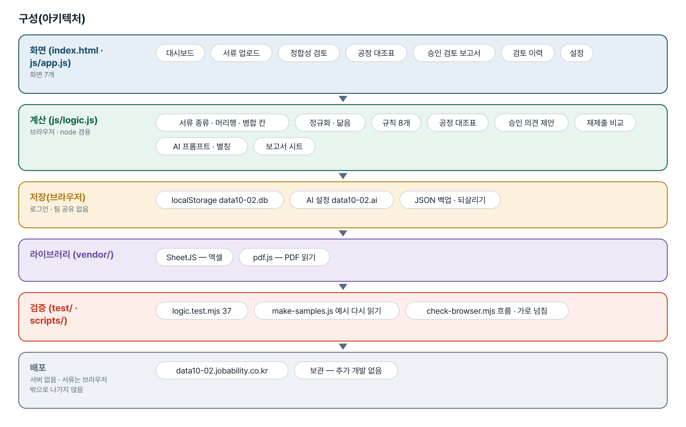
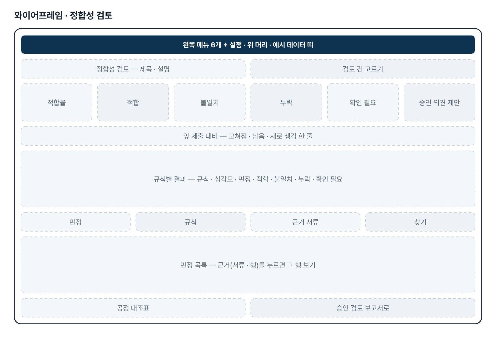
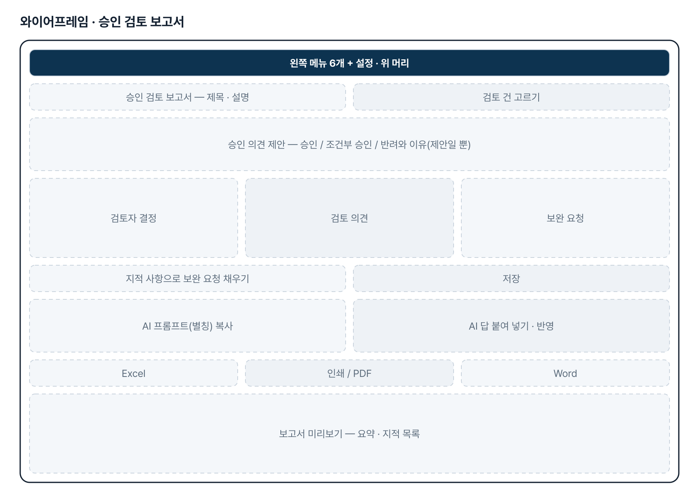
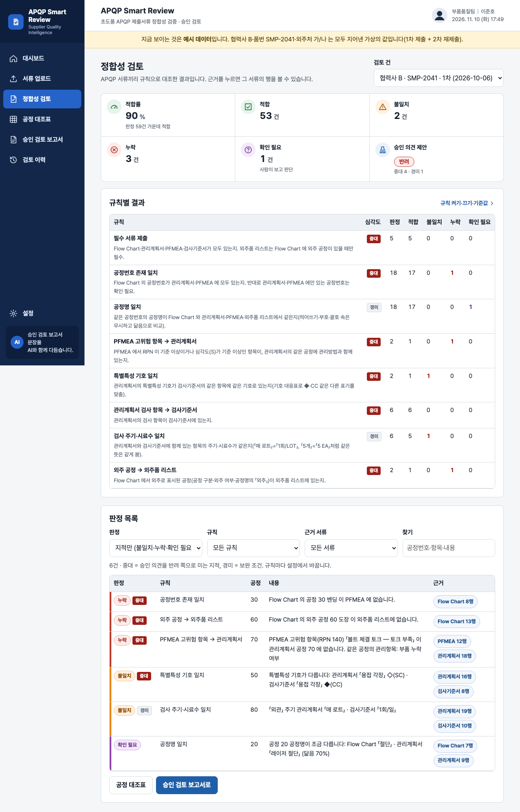

기획서 내려받기
파이프라인 · 아키텍처 · 와이어프레임 · 개발일지가 들어간 워드 문서입니다. 버전마다 따로 남깁니다.
| 버전 | 날짜 | 바뀐 점 | 파일 |
|---|---|---|---|
| v1.1 | 2026-11-10 | 현 상태 최종 기획서 정리(보관 과제, 추가 개발 없음) / 보관 처리(2026-10-21) · 저장소 비공개 전환(2026-10-26) 반영 | 워드 내려받기 |
요구사항과 구현
| 기획서 요구 | 구현 |
|---|---|
| 문서 간 공정 · 관리항목 정합성 평가 | 시작 규칙 8개(켜기 · 끄기 · 심각도 · 기준값) → 적합 · 불일치 · 누락 · 확인 필요, 적합률. 기준값은 가정 |
| 누락 · 불일치 · 확인 필요사항 목록 | 판정 목록(판정 · 규칙 · 근거 서류 거르기, 근거 행 보기), 공정 × 서류 대조표 |
| APQP 승인 검토 보고서 | 승인 의견 제안 + 검토자 결정 · 의견 · 보완 요청, AI 문장(반자동), Excel · 인쇄/PDF · Word(.doc). 회사 양식은 받지 못해 기본 양식 |
| 엑셀 서류 | Excel · CSV · 여러 시트 통합 문서, 서류 종류 추정, 머리행 · 두 줄 머리 · 병합 칸, 열 직접 고르기(기억) |
| PDF 서류 | 글자가 든 PDF 만 시범으로 읽음. 스캔본(OCR) · DRM 파일은 못 읽음 — 미구현 |
| 재제출 확인 | 같은 협력사 · 품번의 앞 차수와 비교(고쳐짐 · 남음 · 새로 생김) |
| 팀 공유 · 협력사 품질 포털(기획서 2단계) | 미구현 — 브라우저마다 따로 저장, JSON 백업으로 옮김 |
| 실제 서류 · 대조 규칙 · 보고서 양식 반영 | 미구현 — 자료를 받기 전에 보관 |
그림으로 보기





개발일지
2026-11-10 · 현 상태 최종 기획서
- 보관 과제라 화면 · 코드는 그대로 두고 지금 상태를 기획서 v1.1 로 정리
- 로직 시험 37개 다시 통과 확인
- 이번 회차의 로그인 키트 · v2.0 은 이 과제에 넣지 않음(보관)
2026-10-26 · 비공개 전환
- 저장소를 비공개로 바꾸고 README 의 Fork · ZIP 안내를 문의 안내로 교체
2026-10-21 · 보관 처리
- 제출자 요청으로 중단 — 같은 분의 과제 07(data10-07) 하나로 진행
- 「삭제」 요청은 되돌릴 수 없어 보관으로 대신함. 기준을 보완해 다시 올리면 새 접수로 받기로 함
- 허브에서는 「보관 · 보완 후 다시 접수」로 표시
2026-10-20 · 1단계
- 기획서 초안 v0.1 과 패들릿 확인 요청 4가지(서류 한 세트 · 대조 규칙 · 보고서 양식 · PDF/DRM 조건)
- 정적 웹 도구 — 화면 틀은 과제 07 과 같게, PDF 읽기는 1차수 data09-08 방식
- 가상 서류(협력사 B · SMP-2041) 1차 제출에 결함 5가지, 2차 재제출은 고친 세트
- 로직 시험 37개, 일부러 깨뜨리기 10가지 확인, 6가지 폭 × 7화면 가로 넘침 0건